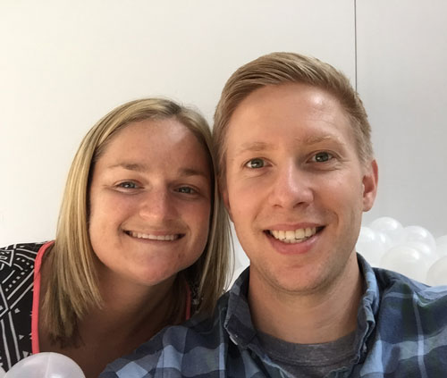

Our Story
Laura and Scott met in 2007 while working together at L.L.Bean. Initially just friends, Laura and Scott started spending more time together outside of work over their time at Bean. When Scott was asked to lead "March into May", a health and fitness program at L.L.Bean, Laura was the only person to show up for the weekly Wednesday night runs.
After five years of dating, Laura and Scott moved to Montgomery Country together where Laura teaches middle school science and Scott manages a team at Roots - a local organic market. After living together for a year and a few "subtle" hints from Laura, Scott knew it was time to ask Laura to spend the rest of her life with him.
On a Tuesday night in October, Scott and Laura went Founding Farmers, a local farm to table restaurant they had wanted to try. After dinner, Scott and Laura walked though the courtyard and sat at a cozy outdoor fireplace where Scott got down on one knee and asked Laura to marry him. With tears in her eyes she said "Yes".
Just to make sure, Scott asked Laura again on the car ride home, “You did say ‘Yes’, right?”
Scott is accompanied by his best man, Sean Branagan, a hell of a guy and a very good Destiny player.
Laura is accompanied by her Maid of Honor and sister, Katie Leffner.